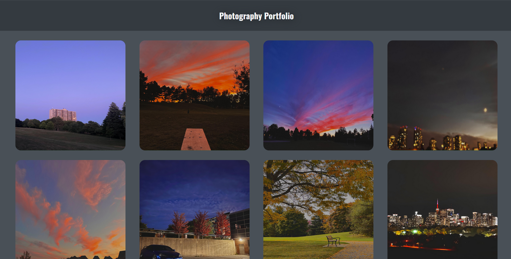

Things I've Built
Button Animations
- This project was made using HTML and CSS
- Each button contains different CSS styles applied when hovered over
- The goal was to practise HTML and CSS
- Through this project I became familiar with animations/transitions using CSS
Customer Tracker
- This project was made using HTML, CSS, and Javascript
- The increment button adds one to the count and the save button logs the current number
- A Javascript function was used to increment and save the number
- Through this project I became familiar with creating and implementing Javascript functions
- This counter was deployed to be used within a restaurant and track the amount of daily customers
Photography Portfolio

- This project was made to display not only my coding capability but also my photography
- Each picture has a zoom and glow effect when hovered over
- HTML and CSS were used to create the website
- Through this project I was able to refine skills with HTML and CSS while also learning alot about the "flexbox" element